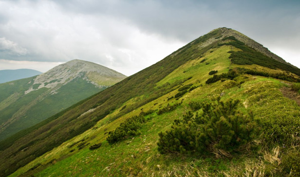

Some of the other mountains in Tanzania are Mount Meru in Arusha Region with a height of 4,566 metres, and Mount Rungwe in Mbeya Region with a height of 2,981 metres.
The Uluguru Mountains in Morogoro Region with a height of 2,630 metres and the Usambara Mountains in Tanga Region with a height of 2,290 are also found in Tanzania.
Hills
Hills are landforms that rise to a moderate height. Hills are generally shorter than mountains. Hills do not have steep slopes as mountains do. However, they have peaks as mountains do. Hills are found in various places in Tanzania. Some of the hills in Tanzania are Mererani in Manyara and Ngorongoro in Arusha, Sao and Kitonga in Iringa, and the Sekenke hills in Singida Region. Figure 4 shows a view of hills.
